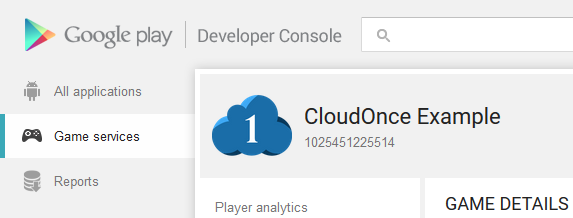
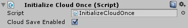
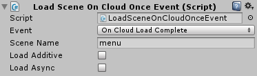
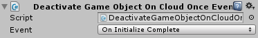
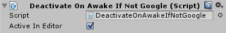
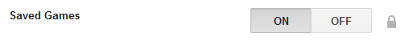

Developer consoles
CloudOnce connects to the native APIs on each platform. In order to add achievements, leaderboards and cloud save to your game you must set up your game on each platforms developer console.
Requirements
Before CloudOnce will work, there are some requirements that must be fulfilled. They differ depending on what platforms you decide to support. Below are the shared requirements and the ones for each individual platform.
CloudOnce
- Unity 5 or later
Apple
- GameKit Framework
- Key-value storage (for iCloud)
- System requirements for iCloud
Amazon
- Android 2.3.3 (API 10) or later
- Android 4.0 (API 14) or later
- Android SDK Packages
- Google Play services
- Android Support Library
- Android Support Repository
- Google Repository
- Android 6.0 (API 23) (doesn't affect min SDK version)
Importing the package
Start by importing the CloudOnce plugin into your project. Don't uncheck anything in the importer, even if there are platforms you aren't using, as this may lead to the plugin behaving incorrectly.

CloudOnce editor
The CloudOnce Editor has been designed to look good with both the light and dark Unity editor skins. It is dockable and has a responsive design, so it works well both horizontally and vertically.
You can open the Editor window by selecting "CloudOnce > Editor" from the Window dropdown menu. Unsaved changes will be marked on the respective tab as a * symbol. The "Discard changes" button will discard any unsaved changes you have made to the configuration.
The "Save Configuration" button naturally saves the configuration. But it also generates some C# classes that makes implementation much easier for achievements, leaderboards and any cloud variables you have declared in the editor. You'll find more information about these classes in the Achievements, Leaderboards and Cloud Save sections of this guide.
Settings
Supported platforms
Here you can toggle on/off each of the platforms CloudOnce supports. Enable the platforms you are releasing to.
Debug mode
Activating the debug mode will enable debug logs. Recommended for debugging, but should be disabled when building production builds.
Android build platform
Select current Android build platform. Only necessary when supporting both Google Play and Amazon. It is very important that this setting is set correctly before building to an Android platform.
Google Play Application ID setup
If you are releasing on Google Play, you must run the Application ID setup. Enter the Application ID into the settings section of the CloudOnce Editor, and click the "Run setup" button.
You can find the Application ID in the Game Services section of Google's developer console, below the title of your game. Be sure to save the configuration after you have run the setup so the editor will remember the ID.
GameCircle API Key
If you are releasing on Amazon GameCircle, you need to enter the API key from your GameCircle configuration here. The Amazon documentation claims that it must be added to a text file, but this is not accurate.
Cloud IDs
Achievement- & leaderboard IDs
Here you can set up all your achievements and leaderboards. For each platform you support, you'll need to enter the ID from the respective platform's developer console. For each achievement/leaderboard you will need to choose an internal ID as well. You will use the internal ID to refer to the achievement/leaderboard in your code.
For more information about implementing achievements and leaderboards, please refer to the Achievements and Leaderboards sections.
Allowed characters
Each ID type has some limitations to what type of characters you can use. With the exception of the internal ID, these limitations mirror the limitations set by each platform holder. The internal ID allowed characters mirror the C# limitations for properties.
- Internal IDs must start with a letter or an underscore (_). They can contain alphanumeric characters (A-Z, a-z, 0-9), hyphens (-) and underscores (_).
- Apple Game Center IDs can contain alphanumeric characters (A-Z, a-z, 0-9), periods (.) and underscores (_).
- Google Play Games IDs can contain alphanumeric characters (A-Z, a-z, 0-9), hyphens (-) and underscores (_).
- Amazon GameCircle IDs can contain alphanumeric characters (A-Z, a-z, 0-9) and underscores (_).
Cloud Variables
Declaring cloud variables
On this tab you can declare all the variables you want to store in the cloud. All the most common variables are supported, as well as a couple of special ones for storing virtual currencies.
For more information about implementing cloud saving, please refer to the Cloud Save section.
Deleting test data
Once you start testing cloud variables in the Unity editor, any test data you save will be stored in PlayerPrefs. The "Delete editor test data" button will delete all the saved test data for your cloud variables. This is helpful when you need to reset the test data.
Quick Start scripts
CloudOnce comes with a few Quick Start scripts that handles some of the most common tasks you'll need. They can all be accessed from the component menu in the Unity editor. If you are using a Unity editor that is older than v4.6, the scripts that require the new GUI system will not be visible.
Initialize CloudOnce
This script will initialize the current platform's game services and attempt to sign in the player. It can be placed on any GameObject in the first scene that is loaded in your project. You have to option to disable Cloud Save functionality here if you don't intend to use it for your game.
Load Scene On Event
This script loads the defined scene when the chosen CloudOnce event is called. It can be placed on any GameObject.
One use case for this script is if you have your loading screen as it's own scene, and you want to load a menu scene when a CloudOnce event is called.
You must enter the filename of the scene that is to be loaded (without ".unity"), and the scene must be first be added to Build Settings. You can press Ctrl + Shift + B to open Build Settings.
You have the option to load the scene with additive and/or async. Please refer to the official Unity documentation about these scene loading methods: SceneManager.LoadScene, SceneManager.LoadSceneAsync.
Deactivate On Event
This script deactivates the GameObject it is attached to when the chosen CloudOnce event is called. A use case for this script is if you want to deactivate a loading screen when a CloudOnce event is called.
Show Achievements Button
This script opens the native achievements overlay for the current platform. It will not work in the Unity editor, only on mobile devices. If the player is currently signed out, it will attempt to sign in the player.
This script will only work if placed on a button created from the "GameObject > UI > Button" menu.
Show Leaderboards Button
This script opens the native leaderboards overlay for the current platform. It will not work in the Unity editor, only on mobile devices. If the player is currently signed out, it will attempt to sign in the player.
This script will only work if placed on a button created from the "GameObject > UI > Button" menu.
Google Sign In/Out Button
As stated in the Quality Checklist for Google Play Games Services, you are required to provide players with both a sign-in option and a sign-out option. This script is designed to provide both, with the same button.
It will update the text on a standard GUI button to "Sign in" if the player is currently signed out, and "Sign out" when the player is signed in.
This script will only work if placed on a button created from the "GameObject > UI > Button" menu.
Deactivate If Not Google
This script deactivates the GameObject it is attached to if the current platform is not Google Play. A use case for this script is when using the above Google Sign In/Out Button script, you will likely want the button to only be visible if playing on Google Play.
If you want the button to be visible when testing in the Unity editor, "Active In Editor" must be enabled. This can be useful to see how a menu would look on Google Play, as opposed to other platforms. If you want to see the effect of switching this setting, you'll have to restart the game, as the GameObject is deactivated in the Awake method.
Initialization
To use CloudOnce, it must first be initialized. The easiest way to do this is to use the above Initialize CloudOnce Quick Start script.
The initialization first tries to sign the user into the current platform's native game services (Game Center/Play Games/GameCircle). If the sign in is successful, it attempts to fetch progress details about any achievements and download any cloud data. If the sign in fails, the system will fall back to using the local cached data. In this scenario you will be able to continue to use the cloud variables, and the system will merge the local data with the cloud data at the next sign in.
The above Quick Start scripts Load Scene On Event and Deactivate On Event work well together with the Initialize CloudOnce Quick Start script.
If you prefer to implement the initialization into one of your existing scripts, you must first add the using directive
CloudOnce
and then use the method
Cloud.Initialize()
for initialization. It is recommended to call this method in an Awake method.
To know when the initialization is complete you can subscribe to the event
Cloud.OnInitializeComplete.
If you don't intend to use Cloud Save in your game, you can disable it by adding false as a parameter to the Initialize method,
like this:
Cloud.Initialize(false).
You also have to option of disabling auto sign-in and auto load in the Initialize method.
Example code
This example code shows initialization of CloudOnce and subscribing to the event
Cloud.OnInitializeComplete.
using CloudOnce;
using UnityEngine;
public class CloudOnceInitializer : MonoBehaviour
{
private void Awake()
{
Cloud.OnInitializeComplete += CloudOnceInitializeComplete;
Cloud.Initialize();
}
public void CloudOnceInitializeComplete()
{
Cloud.OnInitializeComplete -= CloudOnceInitializeComplete;
// Do anything that requires CloudOnce to be initialized,
// for example disabling your loading screen
}
}Achievements
Why use achievements?
Achievements can be a great way to increase your users' engagement within your game. You can implement achievements in your game to encourage players to experiment with features they might not normally use, or to approach your game with entirely different play styles. Achievements can also be a fun way for players to compare their progress with each other and engage in light-hearted competition.
Achievement states
Achievements can be in one of three different states:
- A hidden achievement means that details about the achievement are hidden from the player. The Game services provides a generic placeholder description and icon for the achievement while it's in a hidden state. We recommend making an achievement hidden if it contains a spoiler you don't want to reveal about your game too early (for example, "Discover that you were a ghost all along!").
- A revealed achievement means that the player knows about the achievement, but hasn't earned it yet. Most achievements start in the revealed state.
- An unlocked achievement means that the player has successfully earned the achievement. An achievement can be unlocked offline. When the game comes online, it syncs with the Game services to update the achievement's unlocked state.

Platform differences
Hidden achievements work a bit differently on each platform:
-
Apple Game Center
Hidden achievements are revealed if you use any of the three methods; Reveal, Increment or Unlock. -
Google Play Game Services
You can reveal hidden achievements by using the Reveal method. They are also automatically revealed when they are unlocked. -
Amazon GameCircle
Hidden achievements are only revealed when they are unlocked. Calling on the Reveal has no effect.
Keep this in mind when implementing your achievements.
Initial setup
To add achievements to your game, you must first set them up in each platform's developer console and in the CloudOnce editor. Please see the Cloud IDs section above for more information about setting up achievements in the CloudOnce editor.
Each platform gives you a total of 1000 points (or XP) to distribute on achievements. However, iOS and Amazon allows a maximum of 100 points per achievement, have this in mind when distributing these points.
Implementation
After you have set up all your achievements in the CloudOnce editor, it will generate a static class called
Achievements. This class allows you to increment, reveal and unlock your achievements. To access this class in your scripts you must
first add the using directive
CloudOnce.
After that each achievement can be accessed like this Achievements.YourInternalID.
Here is a code example where you see the syntax for all three achievement methods:
void GameOver()
{
// Report on achievements
Achievements.Score250.Increment(newScore, 250);
if (_didAmazingThing)
{
Achievements.IsAmazing.Unlock();
Achievements.IsMoreAmazing.Reveal();
}
}Don’t worry about calling these methods if the achievements are already unlocked, etc. The states of all the achievements are known before uploading progress, and the methods will ignore the call if there's no change.
Advanced methods
If you need more flexibility than what the generated Achievements class can offer, there are equivalent methods that also take the
achievement ID as a string parameter. Note that this is not the internal ID, but the platform ID
for the current platform. Here is the same code example as above with the advanced methods:
void GameOver()
{
// Report on achievements
Cloud.Achievements.IncrementAchievement(platformID, newScore, 250);
if (_didAmazingThing)
{
Cloud.Achievements.RevealAchievement(platformID);
Cloud.Achievements.UnlockAchievement(platformID);
}
}Native Achievements Overlay
The easiest way to display the native achievements overlay, is to use the above Show Achievements Button Quick Start script.
If you prefer to open the native overlay from one of your existing scripts, you must first add the using directive
CloudOnce
and then use the method
Cloud.Achievements.ShowOverlay().
When the native overlay is showing, your game will be paused and the Unity event
MonoBehaviour.OnApplicationPause(bool)
is called.
Leaderboards
Why use leaderboards?
Leaderboards can be a fun way to drive competition among your players. Hardcore players can fight for the top spots on the public leaderboard, while casual players can compare their scores with their friends.
Initial setup
To add leaderboards to your game, you must first set them up in each platform's developer console and in the CloudOnce editor. Please see the Cloud IDs section above for more information about setting up leaderboards in the CloudOnce editor.

Implementation
After you have set up all your leaderboards in the CloudOnce editor, it will generate a static class called
Leaderboards. This class allows you to submit scores to your leaderboards. To access this class in your scripts you must
first add the using directive
CloudOnce.
After that each leaderboard can be accessed like this Leaderboards.YourInternalID.
Here is a code example where you see the syntax:
void GameOver()
{
// Submit to leaderboard
Leaderboards.HighScores.SubmitScore(score);
}Even if the player has not set a new high score, you should still submit the score to the leaderboard. This is for seeing daily and weekly scores, etc.
Advanced method
If you need more flexibility than what the generated Leaderboards class can offer, there is an equivalent method that also takes the
leaderboard ID as a string parameter. Note that this is not the internal ID, but the platform ID
for the current platform. Here is the same code example as above with the advanced method:
void GameOver()
{
// Submit to leaderboard
Cloud.Leaderboards.SubmitScore(platformID, score);
}Native Leaderboards Overlay
The easiest way to display the native leaderboards overlay, is to use the above Show Leaderboards Button Quick Start script.
If you prefer to open the native overlay from one of your existing scripts, you must first add the using directive
CloudOnce
and then use the method
Cloud.Leaderboards.ShowOverlay().
When the native overlay is showing, your game will be paused and the Unity event
MonoBehaviour.OnApplicationPause(bool)
is called.
Cloud Save
Why use cloud save?
Cloud Save makes it possible to synchronize a player's game data across multiple devices. For example, if you have a game that runs on a phone, you can use the cloud saving to allow a player to continue playing on a tablet without losing any of their progress. It can also ensure that a player's game play continues from where it left off even if their device is lost, destroyed, or traded in for a newer model.
Initial setup
Developer consoles
Before implementing Cloud Save, some initial setup of the developer consoles is necessary.
-
Apple Game Center
Cloud Save on iOS requires you to set up an iCloud Container. -
Google Play Game Services
You must turn on the “Saved Games” option, found on the Game Details page in Game Services.
In some cases it can take up to 24 hours after activating "Saved Games" before it is ready for testing.
If you attempt to initialize CloudOnce with Cloud Save active on Google Play before "Saved Games" is ready, the initialization will crash. -
Amazon GameCircle
No extra setup needed for Amazon GameCircle.
CloudOnce editor
The easiest way to add all your cloud variables is via the Cloud Variables section of the CloudOnce editor. The fields that needs to be filled out are:
- Internal ID
- A unique identifier used to identify this particular variable.
- Variable Type
- For information about each supported cloud variable type, please refer to the respective API documentation:
- Starting Value
- The initial value for the variable.
- Persistence Type
- The method of conflict resolution to be used in case of a data conflict. Can happen if the data is altered by a different device.
If you use Highest, you will only be able to set a higher number than the current one. Lowest works the opposite way and Latest
works just like a regular variable. Special cases:
- For CloudBool
Highest will prefer
trueand Lowest will preferfalse. - For CloudString
Highest will prefer the longest
stringand Lowest will prefer the shorteststring. - The currency types has special conflict resolution, so there is no need to select a persistence type for them.
- For CloudBool
Highest will prefer
- Allow Negative
- The currency types require you to select if the currency is allowed to be negative.

Virtual currencies
When dealing with virtual currencies in games, one has to be extra careful. We have special variables for these: CloudCurrencyInt and CloudCurrencyFloat. These variables have been designed so that the user will never lose any of their acquired currency due to e.g. synchronization problems between devices. All additions and subtractions made to a currency are stored as two sums for each device the user has connected to your game. When checking the balance for a currency, the sum of these transactions are returned. The conflict resolution system is based on this article: Resolving Cloud Save Conflicts
Implementation
After you have set up all your cloud variables in the CloudOnce editor, it will generate a static class called
CloudVariables. This class gives you access to all your cloud variables. To access this class in your scripts you must
first add the using directive
CloudOnce.
After that each cloud variable
can be accessed like this CloudVariables.YourInternalID. Here is a code example where you see the syntax:
void GoldPickup()
{
CloudVariables.GoldCoins++;
}
void PurchaseCoolHat()
{
if (CloudVariables.GoldCoins >= 50)
{
CloudVariables.GoldCoins -= 50;
Cloud.Storage.Save();
Debug.Log("CoolHat purchased!");
}
else
{
Debug.Log("Can't afford CoolHat!");
}
}If you store some of your data in JSON format, you should obscure the JSON string before saving it to a CloudString. For example converting it to a base64 string. This is because CloudOnce saves all data as JSON, and there have been cases where deserialization gets confused and cloud load fails.
Advanced implementation
If you need more flexibility than what the generated CloudVariables class can offer or simply want to declare the cloud variables in one of your existing scripts, this method of implementation is for you.
First add the using directive
CloudOnce.CloudPrefs.
You can then declare cloud variables like this:
yourCloudInt = new CloudInt("uniqueID", PersistenceType.persistenceType);
Refer to the API documentation for information on each cloud variable type.
Declaring the cloud variables this way will enable you to reset cloud variables back to their starting value, using the Reset method:
yourInt.Reset(); See the example below for more details.
Make sure you don't declare any cloud variables as local variables within your methods, this will mess up the save system.
Code example of advanced cloud save implementaion:
using CloudOnce;
using CloudOnce.CloudPrefs;
using UnityEngine;
public class AdvancedCloudSaveExample : MonoBehaviour
{
private CloudInt highScore;
private CloudInt playerDeaths;
private int HighScore
{
get { return highScore.Value; }
set { highScore.Value = value; }
}
private int PlayerDeaths
{
get { return playerDeaths.Value; }
set { playerDeaths.Value = value; }
}
public void GameOver(int score)
{
PlayerDeaths++;
Debug.Log("Player has now died " + PlayerDeaths + " times.");
Debug.Log("The player got " + score + " score.");
if (score > HighScore)
{
Debug.Log("New high score!");
}
// Can set HighScore regardless if the new score is higher or not.
// Since HighScore uses PersistenceType.Highest, lower values will be ignored.
HighScore = score;
Cloud.Storage.Save();
}
private void Start()
{
highScore = new CloudInt("HighScore", PersistenceType.Highest);
playerDeaths = new CloudInt("PlayerDeaths", PersistenceType.Highest);
}
}Loading
The load method
Cloud.Storage.Load() is called
automatically when the user signs in on the current platform. To call a method when new cloud data is received,
subscribe to this event:
Cloud.OnNewCloudValues. A common example is to update
GUI elements after new cloud data is received.
The load method can be called at any time after initialization to check for new cloud data, but with most games, the automatic load after initialization will be enough.
AutoLoad
CloudOnce contains an AutoLoad system for special cases where you want the game to periodically check for new cloud data. The system is disabled by default. To activate it, run this line of code once:
Cloud.AutoLoadInterval = Interval.Every60Seconds;
You can choose from these intervals: 30, 60, 90, 120, 300 and 600 seconds.
This feature increases the Internet traffic your game produces, so only use it if your game really needs it.
Saving
To upload the cloud variables to the cloud, use this method:
Cloud.Storage.Save()
It stores the data locally and tries to upload it to the cloud if the user is signed in. Try to not call this too often as it is performance heavy, and you will want to limit the amount of Internet traffic your game produces.
Think about what data really needs to be cloud data and what can just be saved locally. For example: Option settings usually doesn’t need to be saved to the cloud.